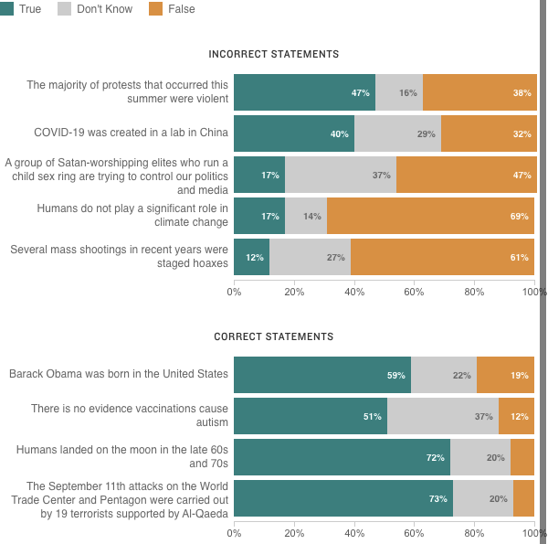

<%= await t.include("lib/_head.html") %>

<% if (COPY.labels.headline) { %>
<h1><%= t.smarty(COPY.labels.headline) %></h1>
<% } %>

<% if (COPY.labels.subhed) { %>
<h2><%= t.smarty(COPY.labels.subhed) %></h2>
<% } %>

<div id="stacked-bar-chart" class="graphic" role="img"
<% if (COPY.labels.screenreader) { %>
aria-label="<%- COPY.labels.screenreader %>"
<% } %>
>
<div class="legend"></div>
<h3><%= COPY.labels.false_statement %></h3>
<div id="chart1">
  
  </div>
  <h3 class="second-header"><%= COPY.labels.true_statement %></h3>
  <div id="chart2">
  </div>
    
</div>

<% if (COPY.labels.footnote) { %>
<div class="footnotes">
    <h4>Notes</h4>
    <p><%= COPY.labels.footnote %></p>
</div>
<% } %>

<div class="footer">
    <% if (COPY.labels.source) { %><p>Source: <%= COPY.labels.source %></p><% } %>
    <% if (COPY.labels.credit) { %><p>Credit: <%= COPY.labels.credit %></p><% } %>
</div>

<script type="text/javascript">
    var DATA = <%= JSON.stringify(COPY.data) %>;
    var DATA_FALSE = <%= JSON.stringify(COPY.data_false) %>;
</script>

<script src="./graphic.js"></script>

<%= await t.include("lib/_foot.html") %>